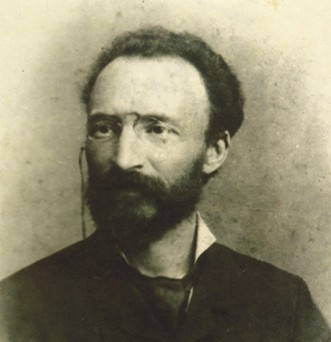
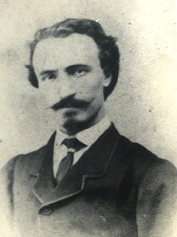
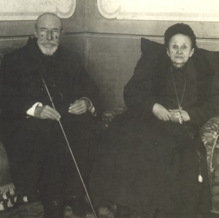
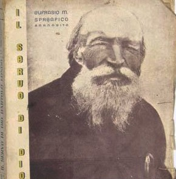
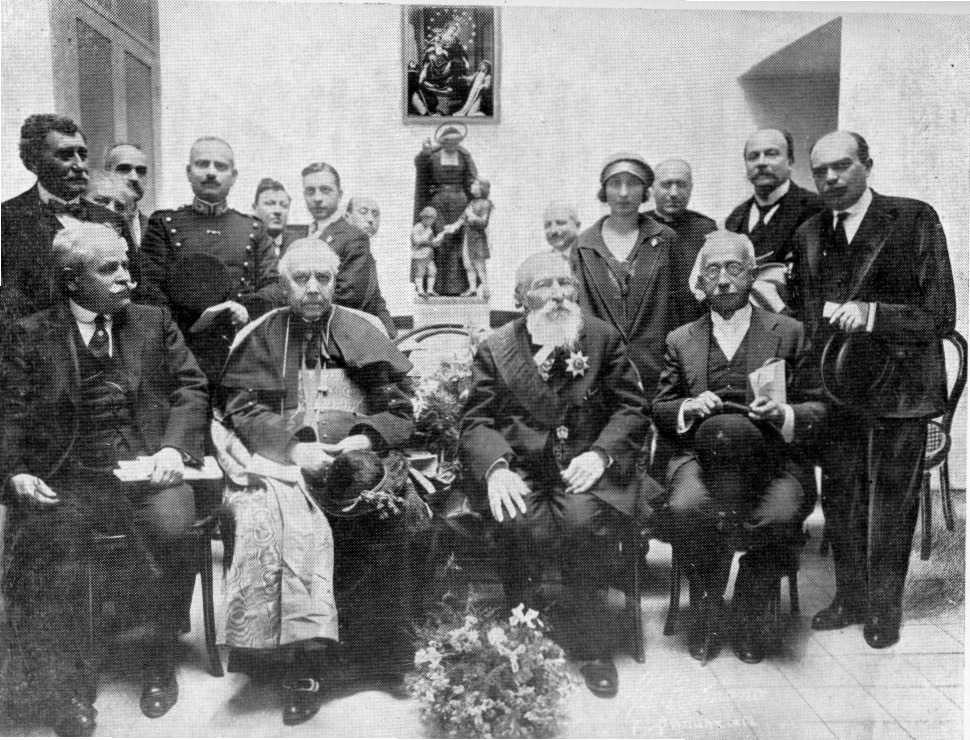

"O Ex-Satanista que Construiu um Santuário"
"Se buscas a salvação, propaga o Rosário. Esta é a promessa da própria Virgem Maria."

Bartolo Longo nasceu em 10 de fevereiro de 1841 em Latiano, uma pequena cidade próxima a Brindisi, no sul da Itália — então parte do Reino das Duas Sicílias. Seus pais, o Dr. Bartolomeo Longo e Antonina Luparelli, eram católicos devotos que rezavam o rosário juntos todos os dias. A família era abastada e de sólida reputação local.
Bartolo era uma criança brilhante e vivaz, mas começou a se afastar da fé aos dez anos, com a morte de sua mãe — o primeiro grande abalo de uma vida que conheceria muitas turbulências interiores. Sua adolescência coincidiu com um dos momentos mais conturbados da história italiana: o Risorgimento, o movimento de unificação nacional liderado por Garibaldi, que tinha no anticlericalismo um de seus pilares. A Igreja era atacada como força reacionária, e os intelectuais do período competiam em fervor anticatólico.
Aos dezoito anos, Bartolo ingressou na Faculdade de Direito da Universidade de Nápoles. O ambiente era explosivo: vários professores eram ex-padres ou clérigos que abandonaram a Igreja, e pregavam um nacionalismo militante combinado com ateísmo e espiritismo. Bartolo foi arrastado por essa corrente com rapidez. "Eu também passei a odiar monges, padres e o Papa", escreveria ele mais tarde, "e em especial os dominicanos, os mais formidáveis e furiosos opositores daqueles grandes professores modernos" — ironia que ele próprio reconheceria depois, tendo se tornado Terciário Dominicano.
O passo seguinte foi o espiritismo, muito em voga nos círculos intelectuais italianos do período. Bartolo mergulhou fundo: participou de sessões espíritas, estudou o ocultismo e acabou sendo iniciado como "sacerdote" de uma seita satânica em Nápoles — um título que, em sua época, designava alguém que presidia rituais e ensinava a doutrina do grupo, não necessariamente um sacerdote em sentido católico. A experiência, longe de trazer paz, precipitou-o num estado de angústia crescente, depressão profunda e pensamentos suicidas. Seu corpo e sua mente estavam se desfazendo.
O instrumento da conversão de Bartolo foi um amigo de sua cidade natal, o professor Vincenzo Pepe, que o abordou diretamente: "Você quer morrer num hospício e ser condenado para sempre?" Bartolo não pôde ignorar nem a pergunta nem o estado em que se encontrava. Pepe o convenceu a se encontrar com um padre dominicano, o Padre Alberto Radente, com quem teve longas conversas ao longo de semanas.
Em 1865, na festa do Sagrado Coração de Jesus, Bartolo se confessou com o Padre Radente na Igreja do Rosário, em Nápoles. Descreveu o momento como "reviver minha Primeira Comunhão — como se eu tivesse recebido um segundo batismo". A seguir, como penitência voluntária, passou dois anos trabalhando diariamente no Hospital Napolitano para Incuráveis — servindo os mais pobres entre os doentes.
Em 25 de março de 1871, ingressou na Ordem Terceira Dominicana, adotando o nome de Irmão Rosário em honra à devoção que passaria o restante de sua vida a propagar. Mesmo convertido, porém, Bartolo continuou a lutar contra a ansiedade, a depressão e os pensamentos suicidas — uma batalha que durou décadas e que faz dele um intercessor singular para os que enfrentam problemas de saúde mental dentro da fé.
Em 1872, Bartolo foi enviado ao Vale de Pompeia para administrar as propriedades da Condessa Marianna Farnararo De Fusco, uma viúva piedosa de quem se tornaria amigo próximo e, anos depois, marido — por recomendação do próprio Papa Leão XIII. O que ele encontrou em Pompeia o chocou: a fé estava praticamente extinta, a única igreja da região era uma ruína, a pobreza era extrema e a população havia substituído a prática religiosa por superstição e bruxaria.
Caminhando pelos campos de Pompeia, Bartolo foi assaltado pelo desespero e relembrou sua antiga condição de "sacerdote satânico". Nesse momento de crise, ouviu uma voz interior — que atribuiu à Virgem Maria — dizendo claramente: "Se buscas a salvação, propaga o Rosário. Esta é a promessa da própria Virgem." Ajoelhou-se no campo, chorou e prometeu que não deixaria Pompeia antes de ter estabelecido a devoção ao Rosário entre seu povo.
O trabalho que se seguiu foi monumental. Em outubro de 1873, restaurou a pequena igreja local, abandonada e deteriorada. Em 1875, recebeu de presente — transportada numa carroça de legumes por um frade dominicano — uma antiga e deteriorada imagem de Nossa Senhora do Rosário encontrada num convento de Nápoles. Bartolo a restaurou com os poucos recursos disponíveis e a instalou na igreja. Os relatos de milagres começaram imediatamente e a afluência de peregrinos foi crescendo de forma constante.
Paralelamente à construção espiritual de Pompeia, Bartolo criou uma vasta rede de obras sociais: casas para órfãos filhos de presos, escolas para crianças pobres, oficinas de ofícios para jovens, habitações para trabalhadores e lares para idosos e enfermos. Empregou os próprios camponeses locais nas obras do santuário, ensinando-lhes ofícios como pedreiros e artesãos — criando assim fonte de renda para quem não tinha nenhuma.
Em 1884, fundou o periódico "O Rosário e a Nova Pompeia", que servia simultaneamente para propagar a devoção mariana e para arrecadar fundos para as obras sociais. Em 1897, fundou uma nova congregação dominicana feminina — as Filhas do Santo Rosário de Pompeia — após não conseguir trazer nenhuma congregação existente para trabalhar na região. A igreja original foi crescendo continuamente até ser elevada a basílica em 1939 e receber o título de Basílica Pontifícia de Nossa Senhora do Santíssimo Rosário de Pompeia.
Talvez a contribuição mais duradoura de Bartolo para a Igreja universal tenha sido sua proposta de um quinto grupo de mistérios para o Rosário — meditando o ministério público de Jesus. Quando João Paulo II propôs os Mistérios Luminosos em sua encíclica sobre o Rosário de 2002, citou explicitamente os escritos de Bartolo Longo como fonte tanto da ideia geral quanto de cada um dos cinco mistérios específicos e do nome coletivo "mistérios da luz". Um leigo do século XIX, convertido do satanismo, que influenciou diretamente a oração de centenas de milhões de católicos no século XXI.
Bartolo Longo faleceu em 5 de outubro de 1926, aos 85 anos, em Pompeia — a mesma cidade que encontrara em ruínas espirituais e materiais cinco décadas antes. Suas últimas palavras foram: "Meu único desejo é ver Maria, que me salvou e que me salvará das garras de Satanás." Foi beatificado em 26 de outubro de 1980 pelo Papa João Paulo II, que o chamou de "Apóstolo do Rosário" e "homem da Virgem".
A canonização, realizada em 19 de outubro de 2025 pelo Papa Leão XIV — no mesmo dia em que Carlo Acutis e Pier Giorgio Frassati também foram elevados à santidade —, seguiu um caminho excepcional: em vez de exigir um segundo milagre pós-beatificação, a Igreja reconheceu que a totalidade da obra de sua vida constitui um testemunho tão extraordinário que justifica a dispensa. Hoje, a Basílica de Pompeia que ele construiu recebe cerca de três milhões de peregrinos por ano — e é a única grande basílica mariana do mundo erguida por um ex-satanista convertido.
A modernidade produz histórias de pessoas que saem de contextos sectários, de manipulação espiritual e de ocultismo, carregando traumas que levam anos para ser trabalhados. A história de Bartolo — que lutou contra depressão, ansiedade e pensamentos suicidas por décadas mesmo após a conversão — é o oposto de uma narrativa de cura imediata e tranquilidade fácil. Ele é um santo para quem sabe que a saúde mental não se resolve com um ato de fé, e que a conversão não elimina automaticamente os efeitos do passado.
É também o testemunho mais radical da doutrina da misericórdia: se um homem que presidia rituais satânicos pode tornar-se construtor de um dos maiores santuários marianos do mundo, então a promessa de que "nenhuma alma está tão perdida que não possa ser resgatada" não é apenas retórica. É verificável. É concreta. É Bartolo Longo, ajoelhado num campo de Pompeia, ouvindo uma voz que ele acreditou ser de Maria — e recomeçando.
De satanista a construtor de santuário — oito décadas de transformação
10 Fev 1841
Nasce em Latiano, perto de Brindisi, sul da Itália, numa família católica abastada e devota.
c. 1860
Ingressa na Faculdade de Direito. Influenciado por professores anticlerilcais, afasta-se da fé e mergulha no espiritismo e no ocultismo.
c. 1864
Torna-se "sacerdote" de uma seita satânica em Nápoles. Desenvolve depressão profunda e pensamentos suicidas.
1865
Na festa do Sagrado Coração, confessa-se com o Padre Dominicano Alberto Radente. Retorna à fé católica após semanas de diálogo e discernimento.
25 Mar 1871
Ingressa como Terciário Dominicano com o nome de Irmão Rosário — uma ironia consciente para quem outrora odiava os Dominicanos.
1872
Enviado para administrar as propriedades da Condessa De Fusco, encontra a cidade em miséria espiritual e material. Ouve a voz interior que o envia a propagar o Rosário.
1875
Recebe uma antiga e deteriorada imagem de Nossa Senhora do Rosário de um convento napolitano. Relatos de milagres começam imediatamente.
1884
Funda um jornal para propagar a devoção mariana e arrecadar fundos para obras sociais — casas para órfãos, escolas e lares para pobres.
1897
Funda uma nova congregação dominicana feminina dedicada ao serviço dos pobres e à educação em Pompeia.
5 Out 1926
Falece aos 85 anos na mesma cidade que transformou. Últimas palavras: "Meu único desejo é ver Maria, que me salvou."
26 Out 1980
Beatificado por João Paulo II, que o chama de "Apóstolo do Rosário" e reconhece sua obra como testemunho extraordinário da misericórdia divina.
19 Out 2025
Canonizado pelo Papa Leão XIV, no mesmo dia que Carlo Acutis e Pier Giorgio Frassati, com dispensa do segundo milagre — caso excepcional na história da Igreja.
O prodígio reconhecido pela Igreja e o testemunho extraordinário que substituiu o segundo milagre
01
Itália · 1943
Carmen Rocco Câmera sofria de uma doença gastrointestinal terminal, sem possibilidade médica de recuperação. Em 1943, um padre chamado Spreafico escreveu cartas à família incentivando-a a orar pela intercessão de Bartolo Longo. Carmen recuperou-se completamente, de forma considerada inexplicável pela medicina. O milagre foi investigado e aprovado pela Congregação para as Causas dos Santos, abrindo caminho para a beatificação por João Paulo II em 1980.
Aprovado em 1980 · para a Beatificação02
Vaticano · 2025
Em caso excepcional e raro na história da Igreja, o Papa Leão XIV dispensou a exigência de um segundo milagre médico pós-beatificação para a canonização de Bartolo Longo. A decisão, fundamentada numa prerrogativa papal prevista no direito canônico, reconheceu que a totalidade de sua vida — a conversão do satanismo, a transformação de Pompeia, o santuário, as obras sociais, os três milhões de peregrinos anuais — constitui, em si mesma, um testemunho tão extraordinário que a confirmação divina é evidente sem necessidade de um segundo prodígio isolado.
Dispensa concedida em 2025 · para a CanonizaçãoImagens da vida, obras e memória de São Bartolo Longo




Imagens utilizadas sob licença de seus respectivos autores. Créditos completos disponíveis aqui.
Documentação utilizada para a elaboração deste perfil
Bartolo Longo — Wikipédia
Verbete biográfico com referências históricas e processuais
A vida de Bartolo Longo: de escravo do demônio a filho predileto de Maria
Blog Lumine
São Bartolo Longo é exemplo para quem tem problemas de saúde mental
ACI Digital · EWTN News
Senhor Jesus, Tu que és o autor de toda conversão e o único capaz de transformar um coração de pedra em coração de carne, concede-nos, pela intercessão de São Bartolo Longo, a graça de nunca duvidar da Tua misericórdia — por mais longe que tenhamos ido.
Ele que foi sacerdote das trevas tornou-se apóstolo do Rosário. Ele que pregava contra a Igreja construiu um de seus maiores santuários. Que sua vida nos lembre que nenhum passado é mais forte do que a Tua graça.
Intercede por nós, São Bartolo, e em especial por todos os que hoje lutam contra a depressão, a angústia e o desespero; pelos que saíram de seitas e carregam as marcas do passado; e por todos os que ainda não encontraram o caminho de volta.
Que a Virgem Maria, que te salvou das garras de Satanás, interceda também por nós e nos conduza ao coração do seu Filho. Amém.
· Para uso privado · Santo canonizado em 2025 ·